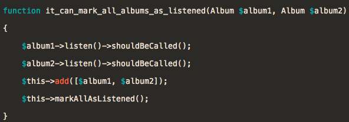
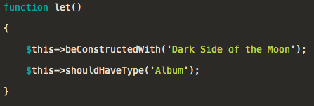

<!doctype html>
<html lang="en">

	<head>
		<meta charset="utf-8">

		<title>BarCampRoc: PHPSpec</title>

		<meta name="description" content="A PHP Testing Framework for the BDD'er">
		<meta name="author" content="John Phillip Betley">

		<meta name="apple-mobile-web-app-capable" content="yes" />
		<meta name="apple-mobile-web-app-status-bar-style" content="black-translucent" />

		<meta name="viewport" content="width=device-width, initial-scale=1.0, maximum-scale=1.0, user-scalable=no">

		<link rel="stylesheet" href="css/reveal.css">
		<link rel="stylesheet" href="css/theme/beige.css" id="theme">

		<!-- For syntax highlighting -->
		<link rel="stylesheet" href="lib/css/zenburn.css">

		<!-- If the query includes 'print-pdf', include the PDF print sheet -->
		<script>
			if( window.location.search.match( /print-pdf/gi ) ) {
				var link = document.createElement( 'link' );
				link.rel = 'stylesheet';
				link.type = 'text/css';
				link.href = 'css/print/pdf.css';
				document.getElementsByTagName( 'head' )[0].appendChild( link );
			}
		</script>

		<!--[if lt IE 9]>
		<script src="lib/js/html5shiv.js"></script>
		<![endif]-->
	</head>

	<body>

		<div class="reveal">

			<!-- Any section element inside of this container is displayed as a slide -->
			<div class="slides">

				<section data-markdown>
					<script type="text/template">
						#PHPSpec
						###The Hipster Testing Framework
						#####(You&apos;ve Probably Never Heard of It)
						<small>By John Phillip Betley</small>
					</script>
				</section>

				<section data-markdown>
					<script type="text/template">
						##jpbetley.github.io/
						##phpspec-barcamproc
					</script>
				</section>

				<section data-markdown>
					<script type="text/template">
						
					</script>
				</section>

				<section data-markdown>
					<script type="text/template">
						# The Plan
						###Build A Collection of My Vinyl Albums Using PHPSpec<!-- .element: class="fragment" data-fragment-index="1" -->
						#####(That&apos;s hipster, right?) <!-- .element: class="fragment" data-fragment-index="2" -->
					</script>
				</section>

				<section data-markdown>
					<script type="text/template">
						# Let&apos;s Get Started
					</script>
				</section>	

				<section data-background="slides/1.png" data-background-size="800px"></section>
				<section data-background="slides/2.png" data-background-size="800px"></section>
				<section data-background="slides/3.png" data-background-size="800px"></section>
				<section data-background="slides/4.png" data-background-size="800px"></section>
				<section data-background="slides/5.png" data-background-size="800px"></section>
				<section data-background="slides/6.png" data-background-size="800px"></section>
				<section data-background="slides/7.png" data-background-size="800px"></section>
				<section data-background="slides/8.png" data-background-size="800px"></section>
				<section data-background="slides/9.png" data-background-size="800px"></section>
				<section data-background="slides/10.png" data-background-size="800px"></section>
				<section data-background="slides/11.png" data-background-size="800px"></section>
				<section data-background="slides/12.png" data-background-size="800px"></section>
				<section data-background="slides/13.png" data-background-size="800px"></section>
				<section data-background="slides/14.png" data-background-size="800px"></section>
				<section data-background="slides/15.png" data-background-size="800px"></section>
				<section data-background="slides/16.png" data-background-size="800px"></section>
				<section data-background="slides/17.png" data-background-size="800px"></section>
				<section data-background="slides/18.png" data-background-size="800px"></section>
				<section data-background="slides/19.png" data-background-size="800px"></section>
				<section data-background="slides/20.png" data-background-size="800px"></section>
				<section data-background="slides/21.png" data-background-size="800px"></section>
				<section data-background="slides/22.png" data-background-size="800px"></section>
				<section data-background="slides/23.png" data-background-size="800px"></section>
				<section data-background="slides/24.png" data-background-size="800px"></section>
				<section data-background="slides/25.png" data-background-size="800px"></section>
				<section data-background="slides/26.png" data-background-size="800px"></section>
				<section data-background="slides/27.png" data-background-size="800px"></section>
				<section data-background="slides/28.png" data-background-size="800px"></section>
				<section data-background="slides/29.png" data-background-size="800px"></section>
				<section data-background="slides/30.png" data-background-size="800px"></section>
				<section data-background="slides/31.png" data-background-size="800px"></section>
				<section data-background="slides/32.png" data-background-size="800px"></section>
				<section data-background="slides/33.png" data-background-size="800px"></section>
				<section data-background="slides/34.png" data-background-size="800px"></section>
				<section data-background="slides/35.png" data-background-size="800px"></section>
				<section data-background="slides/36.png" data-background-size="800px"></section>
				<section data-background="slides/37.png" data-background-size="800px"></section>
				<section data-background="slides/38.png" data-background-size="800px"></section>
				<section data-background="slides/39.png" data-background-size="800px"></section>
				<section data-background="slides/40.png" data-background-size="800px"></section>
				<section data-background="slides/41.png" data-background-size="800px"></section>
				<section data-background="slides/42.png" data-background-size="800px"></section>
				<section data-background="slides/43.png" data-background-size="800px"></section>
				<section data-background="slides/44.png" data-background-size="800px"></section>
				<section data-background="slides/45.png" data-background-size="800px"></section>
				<section data-background="slides/46.png" data-background-size="800px"></section>
				<section data-background="slides/47.png" data-background-size="800px"></section>
				<section data-background="slides/48.png" data-background-size="800px"></section>
				<section data-background="slides/49.png" data-background-size="800px"></section>
				<section data-background="slides/50.png" data-background-size="800px"></section>
				<section data-background="slides/51.png" data-background-size="800px"></section>
				<section data-background="slides/52.png" data-background-size="800px"></section>
				<section data-background="slides/53.png" data-background-size="800px"></section>
				<section data-background="slides/54.png" data-background-size="800px"></section>
				<section data-background="slides/55.png" data-background-size="800px"></section>
				<section data-background="slides/56.png" data-background-size="800px"></section>
				<section data-background="slides/57.png" data-background-size="800px"></section>
				<section data-background="slides/58.png" data-background-size="800px"></section>

				<section data-markdown>
					<script type="text/template">
						#Recap
					</script>
				</section>

				<section data-markdown>
					<script type="text/template">
						###Quick Install with Composer
					</script>
				</section>

				<section data-markdown>
					<script type="text/template">
						###PHPSpec Test Runner Stubs Missing Classes/Functions
					</script>
				</section>
					
				<section data-markdown>
					<script type="text/template">
						###Fluent, Easy to Understand Matchers (Testing Methods)
						<small>$this->shouldHaveRating(5)</small> <!-- .element: class="fragment" data-fragment-index="1" -->
						<small>$this->shouldHaveType('VinylCollection')</small> <!-- .element: class="fragment" data-fragment-index="2" -->
						<small>$this->shouldThrow('InvalidArgumentException')</small> <!-- .element: class="fragment" data-fragment-index="3" -->
					</script>
				</section>

				<section data-markdown>
					<script type="text/template">
						###Automatic Stubs/Doubles/Mocks
						
					</script>
				</section>
					
				<section data-markdown>
					<script type="text/template">
						###Let and LetGo
						
					</script>
				</section>

				<section data-markdown>
					<script type="text/template">
						###Learning More
						* PHPSpec Website - http://www.phpspec.net/
						* PHPSpec Repo - https://github.com/phpspec/phpspec
						* Prophecy Repo - https://github.com/phpspec/prophecy
					</script>
				</section>

				<section data-markdown>
					<script type="text/template">
						#Thanks
					</script>
				</section>

				<section data-markdown>
					<script type="text/template">
						#Questions?

						####John Phillip Betley
						####Website: http://jpbetley.com
						####Github: https://github.com/JPBetley
						####Twitter: @JPBetley
					</script>
				</section>

				<section data-markdown>
					<script type="text/template">
						#Credits

						#####Materials and Content attributed to PHPSpec and Jeffrey Way
						#####Built with reveal.js
					</script>
				</section>

				<section data-markdown>
					<script type="text/template">
					</script>
				</section>

			</div>

		</div>

		<script src="lib/js/head.min.js"></script>
		<script src="js/reveal.min.js"></script>

		<script>

			// Full list of configuration options available here:
			// https://github.com/hakimel/reveal.js#configuration
			Reveal.initialize({
				controls: false,
				progress: true,
				history: true,
				center: true,

				theme: Reveal.getQueryHash().theme, // available themes are in /css/theme
				transition: Reveal.getQueryHash().transition || 'default', // default/cube/page/concave/zoom/linear/fade/none

				// Parallax scrolling
				// parallaxBackgroundImage: 'https://s3.amazonaws.com/hakim-static/reveal-js/reveal-parallax-1.jpg',
				// parallaxBackgroundSize: '2100px 900px',

				// Optional libraries used to extend on reveal.js
				dependencies: [
					{ src: 'lib/js/classList.js', condition: function() { return !document.body.classList; } },
					{ src: 'plugin/markdown/marked.js', condition: function() { return !!document.querySelector( '[data-markdown]' ); } },
					{ src: 'plugin/markdown/markdown.js', condition: function() { return !!document.querySelector( '[data-markdown]' ); } },
					{ src: 'plugin/highlight/highlight.js', async: true, callback: function() { hljs.initHighlightingOnLoad(); } },
					{ src: 'plugin/zoom-js/zoom.js', async: true, condition: function() { return !!document.body.classList; } },
					{ src: 'plugin/notes/notes.js', async: true, condition: function() { return !!document.body.classList; } }
				]
			});

		</script>

	</body>
</html>
